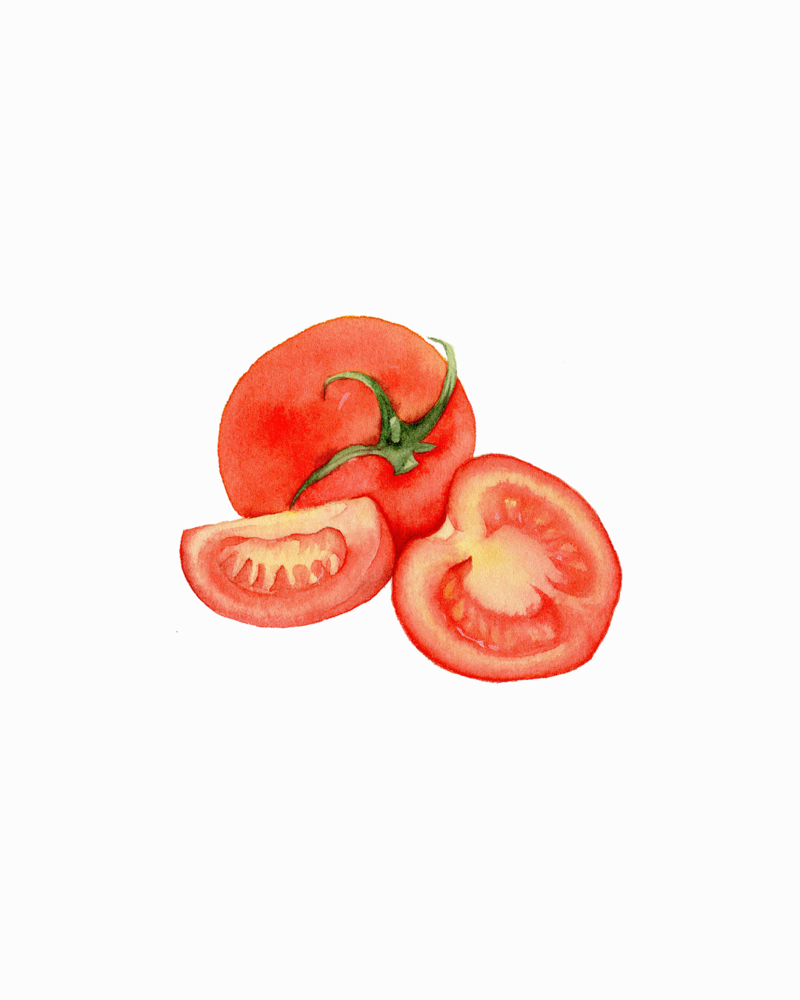
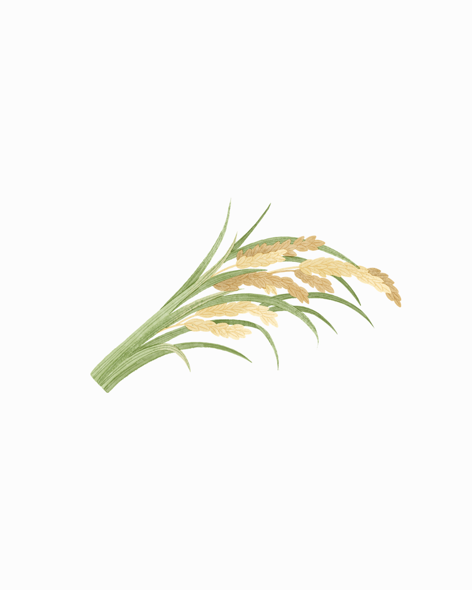
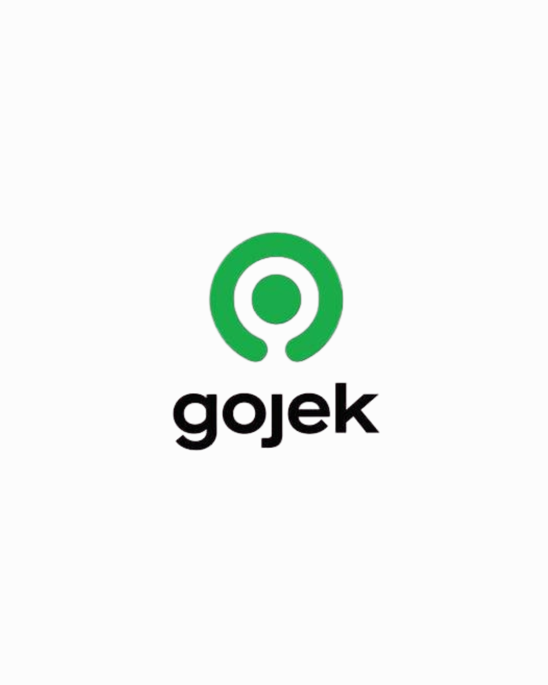

Informatics Engineering student at Universitas Komputer Indonesia with a strong interest in data science, data analysis, and data visualization. Currently deepening knowledge in Machine Learning and Deep Learning, including Natural Language Processing (NLP) and Convolutional Neural Networks (CNN), with a focus on using Python, TensorFlow, Keras, and Looker Studio.Highly motivated to apply acquired knowledge and skills in an internship program to gain practical experience in a real-world data science environment.

Project ini bertujuan untuk mengklasifikasikan tingkat kematangan buah tomat menjadi tiga kelas yaitu mentah, setengah matang, dan matang menggunakan citra digital. Metode yang digunakan adalah ekstraksi fitur Gray-Level Co-occurrence Matrix (GLCM) dan Color Moments, kemudian diklasifikasikan menggunakan algoritma Support Vector Machine (SVM). Dataset terdiri dari 504 citra tomat yang melalui tahap preprocessing seperti segmentasi, cropping, konversi grayscale, dan HSV.
Proyek ini bertujuan membangun model deteksi cyberbullying pada tweet menggunakan machine learning dengan dataset berisi 47.692 tweet yang telah dilabeli ke dalam kategori Age, Ethnicity, Gender, Religion, dan Not Cyberbullying. Data diproses melalui tahap data cleaning dan text preprocessing seperti lowercase, penghapusan URL, emoji, tokenisasi, stopword removal, dan stemming, kemudian diubah menjadi fitur numerik menggunakan TF-IDF. Dataset selanjutnya dibagi menjadi data latih dan data uji, lalu beberapa algoritma diuji seperti Logistic Regression, SVM, Random Forest, XGBoost, Gradient Boosting, dan LightGBM. Berdasarkan evaluasi performa model menggunakan metrik seperti accuracy, precision, recall, dan analisis overfitting, LightGBM dipilih sebagai model terbaik dengan akurasi sekitar 93%, dan model tersebut kemudian diimplementasikan dalam aplikasi berbasis Streamlit untuk mendeteksi cyberbullying secara otomatis.

Proyek ini bertujuan memprediksi hasil produksi padi di India menggunakan algoritma Regresi Linear Sederhana. Dataset yang digunakan berasal dari India Agriculture Crop Production Dataset (Kaggle) dengan fokus pada komoditas padi periode 2010–2015 sebanyak 4.160 data, menggunakan variabel Area (luas lahan) sebagai variabel independen dan Production (hasil produksi) sebagai variabel dependen. Data diproses melalui tahap data preparation seperti pengecekan missing value, log transform untuk mengurangi outlier, dan normalisasi Min-Max. Model regresi kemudian dibangun dengan pembagian 80% data latih dan 20% data uji, serta dievaluasi menggunakan MSE, RMSE, MAE, dan R². Hasil evaluasi menunjukkan akurasi model sangat baik dengan R² sebesar 0,987, yang menandakan bahwa luas lahan sangat berpengaruh terhadap produksi padi. Model ini kemudian digunakan untuk memprediksi produksi padi lima tahun ke depan, dan diimplementasikan dalam dashboard interaktif menggunakan Streamlit untuk membantu FAO India dalam pengambilan keputusan terkait kebijakan pertanian dan ketahanan pangan.
Project ini merupakan sebuah sistem analisis data media sosial yang dirancang untuk memahami dinamika opini publik terhadap program Makan Bergizi Gratis (MBG) di platform X secara menyeluruh, dengan mengintegrasikan tiga pendekatan utama yaitu Social Network Analysis (SNA) untuk memetakan struktur interaksi dan menemukan aktor paling berpengaruh, Latent Dirichlet Allocation (LDA) untuk mengidentifikasi topik-topik utama yang sedang dibicarakan, serta analisis sentimen berbasis IndoBERT untuk mengklasifikasikan opini masyarakat ke dalam kategori positif, negatif, dan netral; melalui alur mulai dari pengumpulan data, preprocessing teks dan graf, pemodelan topik, hingga fine-tuning model sentimen, project ini mampu memberikan insight yang lebih dalam tidak hanya tentang bagaimana masyarakat merespons program MBG, tetapi juga siapa yang paling berperan dalam membentuk opini tersebut dan bagaimana pola penyebaran informasinya terjadi di dalam jaringan sosial.

Project ini merupakan sistem analisis sentimen otomatis yang dirancang untuk mengolah dan memahami opini pengguna terhadap aplikasi Gojek berdasarkan ulasan di Google Play Store. Dengan memanfaatkan pendekatan berbasis lexicon untuk pelabelan awal sentimen serta algoritma Support Vector Machine (SVM) sebagai model klasifikasi, project ini mampu mengkategorikan ulasan pengguna ke dalam sentimen positif dan negatif secara efisien dari total 10.000 data yang tersedia. Proses analisis dimulai dari data understanding, eksplorasi data (EDA) untuk melihat pola distribusi rating yang menunjukkan dominasi ulasan ekstrem (bintang 5 dan bintang 1), hingga tahap pemodelan untuk menghasilkan klasifikasi yang akurat. Hasil dari project ini memberikan insight penting mengenai tingkat kepuasan pengguna serta membantu pengembang dalam mengevaluasi kualitas layanan, mengidentifikasi masalah utama, dan mengambil keputusan strategis untuk peningkatan aplikasi secara berkelanjutan.
Sertifikat dan pelatihan yang pernah diikuti.
pratamailham454@gmail.com